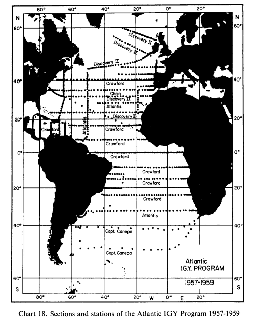

Oceanography
History
Divisions
- Biological
- Chemical
- Physical
- Dynamical
Graphy, not Logy!

James Rennel
Measurements
- Where?
- How deep?
Physical Oceanography


Voyage Tracks
Physical Oceanography

Density Map ca. 1900
Dynamics!

- Temperature
- Salinity
- Currents(?)
Geostrophy to Thermal Winds to Currents
Steady State, Dynamical Ocean
Lagrangian to Eulerian

Wüst 1964
Unsteady Ocean

El Niño
Ocean "Weather"

GFDL, Model Output